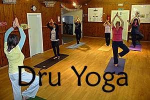
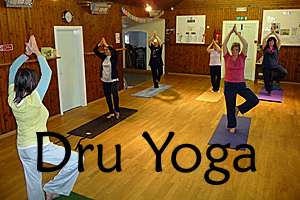

{% include 'nav.html' %}
{% include 'nav.html' %}
Westmuir boasts a number of local activities which cater for most tastes. Whether you are a keen walker, good at homecrafts or would like to try the ancient art of Tai Chi, there is a group which will welcome you along. For more information on each of the following just click on the picture of your choice and find out what each group does, when it meets and who to contact if you would like more information. Go on - have a go - you might just surprise yourself!

Latest News
The following are current contact details for Yoga Classes which take place twice per week in the Village Hall.
Monday 6:15 - 7:15 Janey Andrews 07934443557 janey@glentrek.com
Wednesday 6:00 - 7:00 Gavin 01575 598297
 
